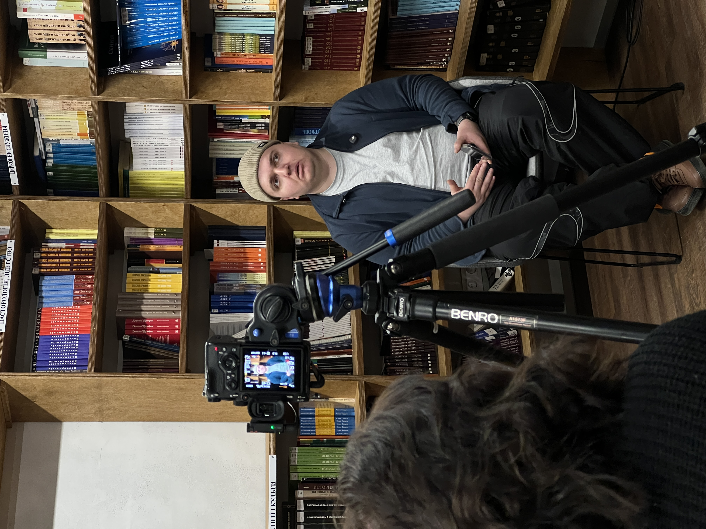
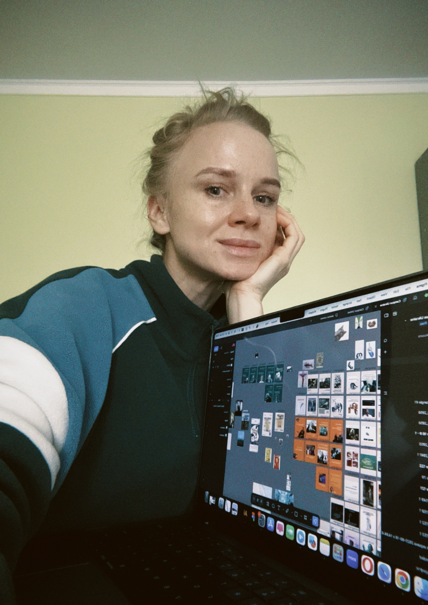
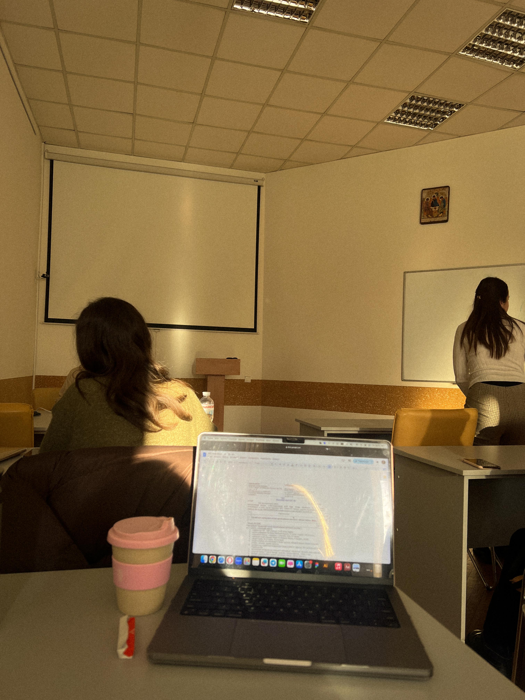
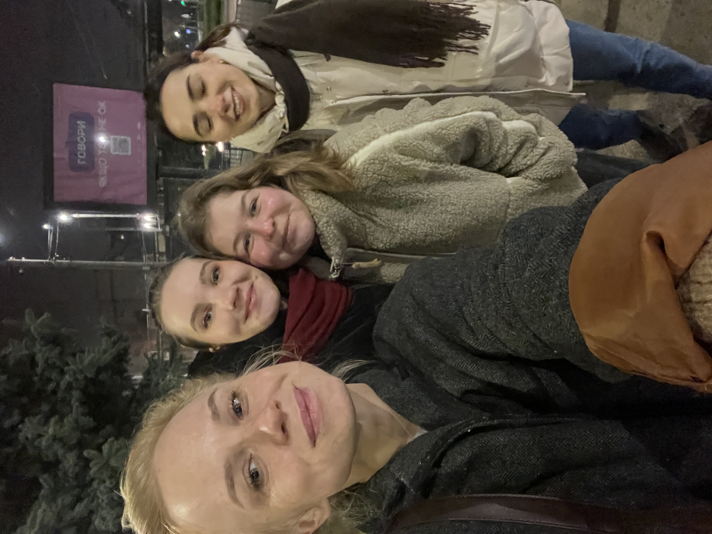
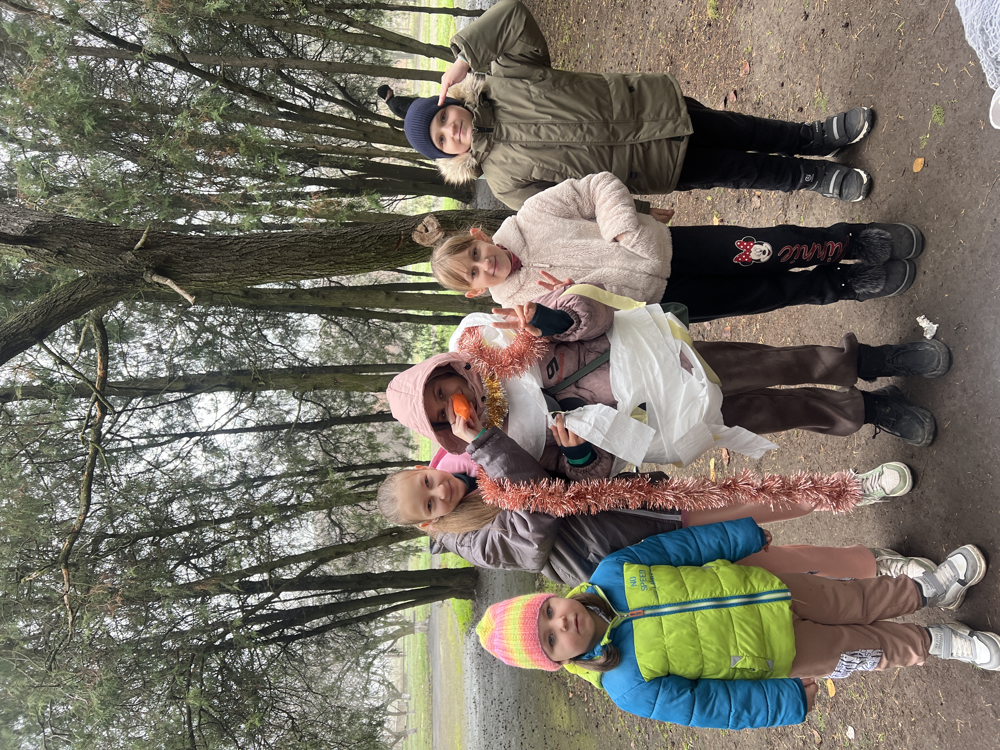

Таня Бура
Таня Бура
Новий розділ
Нова роль у місії, навчання в УКУ, наставництво та поїздка на Херсонщину.
Я люблю зміни.
Люблю переключатись із завдання на завдання, люблю змінювати інтер’єр своєї кімнатки, навіть переїзди, в принципі (окрім того, який був спровокований повномасштабною війною), часто сприймаю більше як пригоду. Тому цей рік я починаю новим розділом — відтепер я відповідатиму за зовнішні комунікації та піар нашої місії «Україна для Христа».
Архівний лист. Події й молитовні потреби описані станом на час написання.

Кемпус — одне з десяти служінь

Відчуваю колосальну відповідальність і мрію робити то так добре, як можу.
Кемпус — це одне з 10 служінь, які має місія. Крім студентського, ми маємо служіння з вчителями, військовими, сім’ями, музикантами, гуманітарне, спортивне і церковне служіння, служіння українцям за кордоном.
Тому відтепер моя роль буде допомагати нашій місії в цілому і окремим служінням розповідати, чим займаються і яку допомогу своїм авдиторіям можуть надати. Це включає в себе роботу з сайтами, соцмережами, різними медіа та партнерами. Написання статей, організація івентів, представлення нас на подіях різного рівня, створення медійного та іншого контенту. Мені дуже цікаво, але настільки ж челенджево — відчуваю колосальну відповідальність і мрію робити то так добре, як можу.
Навчання, яке тримає

Наш меседж — цінний і життєзмінюючий, а отже він вартує зусиль і праці для поширення.
Тому для мене підтримкою є можливість навчатись в університеті. Я здобуваю магістерський ступінь по програмі з медіакомунікацій в УКУ, і якість освіти тут значно ліпша, ніж на моїй попередній магістерці в КНУ. Тому маю надію навчитись чогось доброго та імплементувати то в служіння.
В принципі, воно вже десь так і є — предмети в нас максимально прикладні, вчимось у топ спеціалістів країни і одразу багато практикуємо: створюємо комунікаційні стратегії, рекламні ролики, подкасти, пишемо статті і вчимось з досвіду інших.
Мене надихає ідея робити для християнських організацій не як-небудь, а максимально якісно, бо вірю, що наш меседж — цінний і життєзмінюючий, а отже він вартує зусиль і праці для поширення.
Наставництво і благовістя

Також я продовжую наставляти віруючих дівчат і благовістити нецерковним. У мене в групі більшість дівчат відносяться до останньої категорії, тому я радію шансу провести з ними півтора роки — наразі «одноразове» Євангеліє не діє. Молодь вірить більше тому, хто ми і що транслюємо своїми діями та виборами, аніж у гучні фрази. Та і не тільки молодь :)
Тому радію, що можемо мати кавові розмови на перервах, посиденьки в мене дома, спільні походи в кіно і обговорення після.
Моліться, будь ласка, про Ніку, Соломію, Ренату, Стасю, Софію — щоб Бог стукав до них, а вони хотіли розмовляти з Ним.
Січень без світла й тепла
Наразі новин щодо ДТП немає, тому поки чекаю на звісточку від слідчого та прокуратури. Дуже дякую за ваші молитви і підтримку — вони тримають мене в здоровому глузді.
Січень був непростим місяцем через відключення всього — від опалення до води. Але у Львові то відбувалось значно рідше, ніж в Києві, тому я щиро сумую про всіх моїх любих киян, які ніяк не можуть зігрітися і виспатись. Моліться про них особливо, будь ласка.
Херсонщина: діти деокупованих сіл

Зараз я на Херсонщині — маю свою традиційну поїздку до діток на деокупованих територіях. Тут дуже багато відключень, морозно і проблеми з опаленням і зв’язком. Моліться про те, щоб наше наставництво з дітьми було життєзмінюючим для них і щоб вони могли свого часу віддати своє життя Богу.
Стати партнером служіння
Це служіння тримається на команді молитовних і фінансових партнерів. Ваш внесок допомагає нести Євангеліє, практичну турботу й надію студентам, дітям і молоді України.
Підтримати служіння Тані
Через give.cru.org
Сайт служіння
Більше про студентське служіння
Молитовні потреби
- • За Ніку, Соломію, Ренату, Стасю, Софію — щоб Бог стукав до них, а вони хотіли розмовляти з Ним.
- • За киян — які ніяк не можуть зігрітися і виспатись через відключення.
- • За дітей на Херсонщині — щоб наставництво було для них життєзмінюючим і щоб вони свого часу віддали своє життя Богу.
- • За справу ДТП — чекаю на звістку від слідчого та прокуратури.
Дуже дякую за ваші молитви і підтримку — вони тримають мене в здоровому глузді.
Більше апдейтів я пощу на своїй Facebook сторінці, то запрошую вас туди, якщо ви ще не там. Дякую, що можу розраховувати на вас і разом з вами робити те, що, вірю, має цінність!
Дякую, що можу розраховувати на вас і разом з вами робити те, що, вірю, має цінність!
— Таня Бура · Лютий 2026
Таня Бура
З благословенням у Христі
Студентське служіння · Україна для Христа